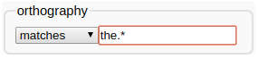

3 - Basic Searching
Now that you have some transcripts in your database, we'll try out LaBB-CAT's search functions a little.
Searching broadly involves the following steps:
- selecting participants whose utterances you want to search,
- specifying one or more patterns to search for, and
- exploring or extracting the search results.
We'll start with a very simple search - all the instances of the word “the” uttered by monolingual English-speaking males.
- In LaBB-CAT, click on the participants link on the menu.
This takes you to the Participants page you have already seen in a previous exercise, where you can list participants and filter them by their attributes. You can see various participant attributes listed across top of the page.- We're interested in male participants, so under the word Gender, select M.
The page will then display a list of all the male participants in the database. - We want the participants who speak only English, so enter the following regular expression under Languages:
^English$
This pattern, starting with “^” and ending with “$”, means “match only values that start and end with the word ‘English’" - i.e. English is the only word mentioned.
The page will then display a list of male participants who list only English as their language.
- We're interested in male participants, so under the word Gender, select M.
- Click Layered Search at the top.
You will see the participants you selected listed at the top, followed by a list of layers (which we'll ignore for now). Below that, there's a heading Search Matrix with various controls. This is the ‘search matrix’, although it doesn't look much like a matrix yet, because it's only one layer high and one word wide… - In the box labelled ‘regular expression’ under the word orthography type the word
the
- Now click the Search button at the bottom.
A progress bar will appear, and then shortly after that, a new window will open, which has a list of search results in it. Your browser's popup-blocker might prevent the results page from opening – you can fix that either by allowing the popups in your browser, or by clicking the Display results link that appears after the search finishes. - Each match is highlighted and shown within a few words context. Click on the first match.
You will see that the interactive transcript page opens in a new browser tab, with the match at the top, and highlighted. You will also see that all the other matches from the same transcript are also highlighted. - We've already seen what can be done in the interactive transcript page, so close the tab to return to the results page.
- Each result line has a ticked checkbox next to it. Scroll to the bottom of the list.
You'll see that there are several buttons at the bottom, which perform operations on the ticked results CSV Export, Utterance Export, and Audio Export (among others). - Untick the Select all results checkbox, and then tick a handful of results in the list.
Tip: You can select a group of matches by ticking the first one, and then holding down the Shift key while ticking the last one. - Hover the mouse pointer over the Prefix Names checkbox to see what this option does, and then tick it.
- Click the Audio Export button.
- Save and open the resulting zip file.
You'll see that the files are systematically named to include:- the result number,
- the name of the transcript, and
- the start and end time of the extracted utterance.
- Now go back to the results page and click the Utterance Export button.
- Save and open the resulting zip file.
You'll see that the TextGrid names match the audio file names in the previous zip file. - Open one of the TextGrids in Praat.
You'll see that, in addition to the utterance and word tiers, there's also a target tier which marks the words that matched the search. - Back on the results page, click the CSV Export button.
- Save the resulting file, and open it.
You may have to specify some import options, in which case it may be handy to know that the field separator is comma, and the fields are quoted by speech marks.
Tip: If you're using Microsoft Excel and you find it doesn't open all the columns correctly:- Create a new workbook in Excel.
- Click the Data tab.
- On the Get External Data ribbon click From Text.
- Select the CSV file you downloaded.
- Select Delimited and click Next.
- Ensure Comma is the only delimiter ticked and click Next.
- Click Finish and then OK.
You will see a spreadsheet with one line per selected result, and various columns containing information about the speaker, the corpus, the match line and word, and a URL to the interactive transcript for the match.
With this spreadsheet, you can work ‘offline’ with the results, tagging them, computing statistics in Excel, R, or any other program that can work with CSV files. There are a few more uses for the CSV results files, which are dealt with in a separate tutorial…
- Close the CSV file, and the results page, and go back to the search matrix page.
We've seen that you can search for exact word matches, but you can also search for patterns, using ‘regular expressions’. Now we're going to search for words beginning with “the…” - Change the orthography search text to
the.*
(i.e. after the word “the”, append a full-stop and an asterisk.

The full-stop means “any character at all”, and the asterisk means “zero or more of the previous thing”, so .* means “zero or more characters”. - Click Search.
You will see that now the search results include the word “the” and also words like “then”, “there”, “they”, etc. - Now go back to the search page, and change the asterisk to a plus-sign, which means “one or more of the previous thing”

- Click Search.
You will see that now the search results exclude the word “the”, only including words where the initial “the…” is followed by at least one character. - Now change your search by replacing the
ein “the” with[aeiou]- so your search pattern will beth[aeiou].+
The square-brackets mean “any one of the things inside the brackets”, so[aeiou]means “any vowel”. - Click Search.
You will now see that the results include words like “think”, “that”, “thought”, etc.
 You can get more information about regular expressions by using the online help on the search page, and also by clicking the the regular expressions link above the search matrix.
You can get more information about regular expressions by using the online help on the search page, and also by clicking the the regular expressions link above the search matrix.
Up until now, we've only been matching against one word at a time. Now we're going to include patterns for a chain of words. - On the search page, to the right of the search matrix, there's a + button. Click it.

Now you will see that our search matrix is one layer high by two words wide. - Change the entries on the orthography layer so that it will match the word “the” followed immediately by a word that starts with a vowel, and click Search.
- Check the search results are giving you what you expected.
- Now search for “the” followed, within two words, by a word that starts with a vowel.
- Dream up some other searches that interest you, and try out other options on the search page.
If in doubt about a search option, try the online help page.
Because we're searching by word orthography, you will have noticed that your searches for words starting with a vowel return words where the spelling starts with a vowel, but the pronunciation doesn't, e.g. “one”, “once”, etc. In order to search by pronunciation, we need to add a layer of pronunciation annotations. We'll do that in the next exercise…